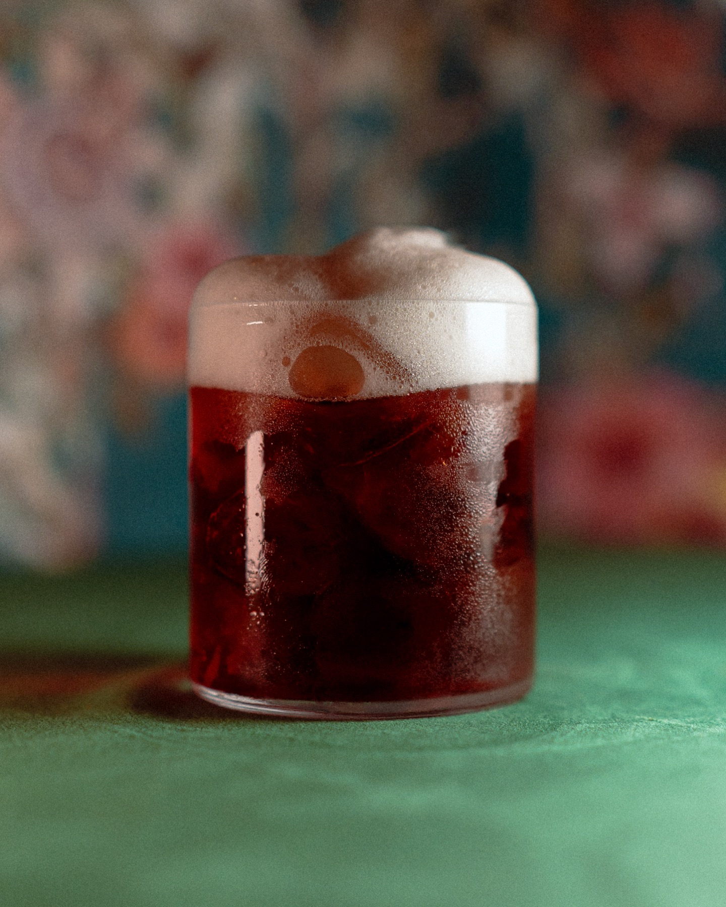
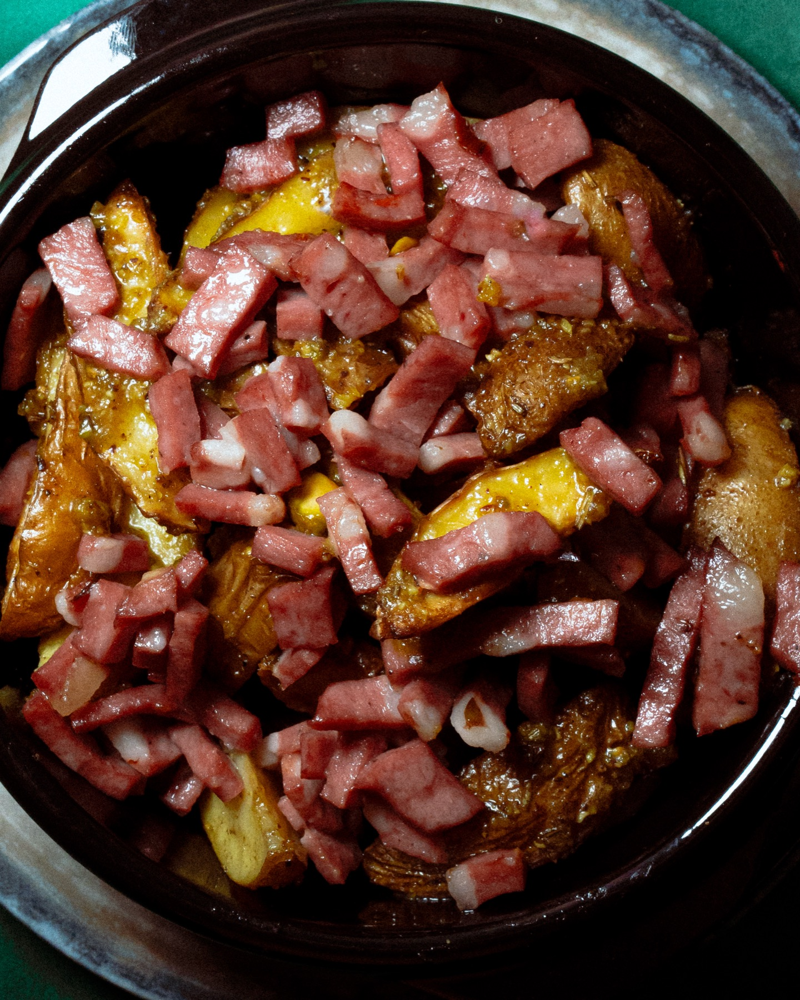
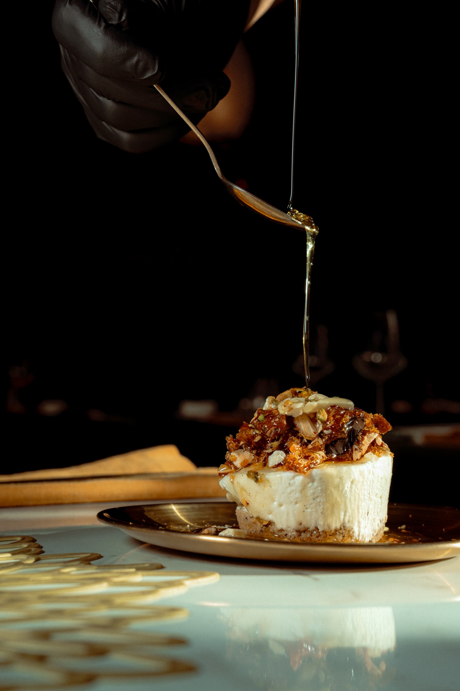
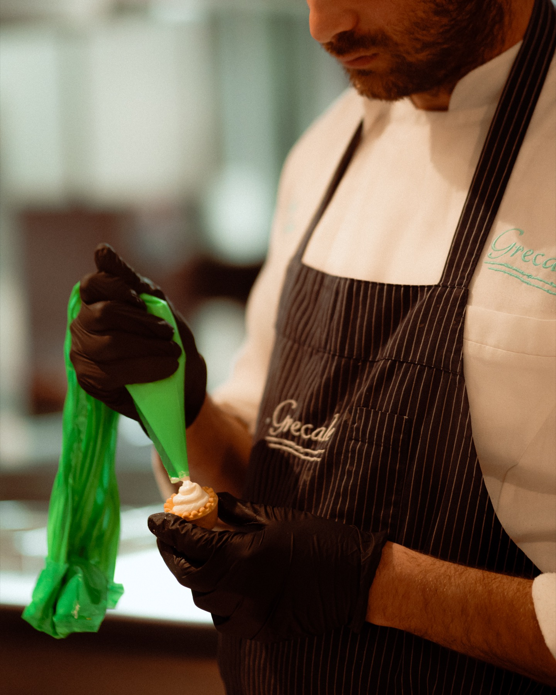
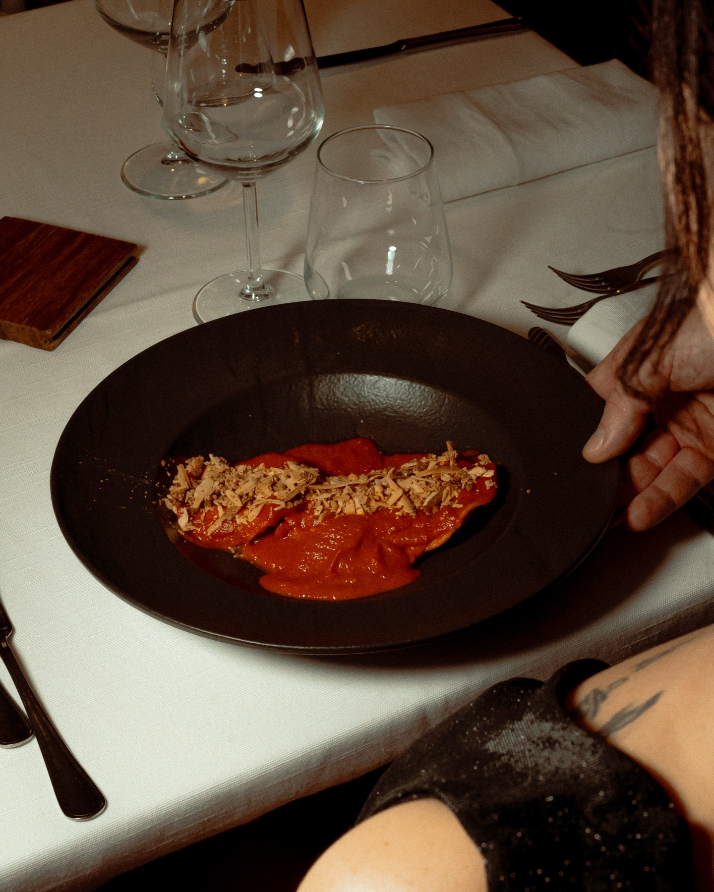
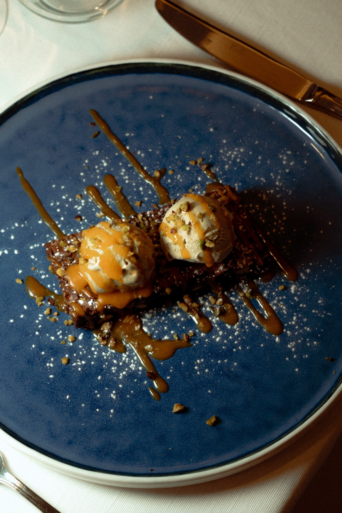
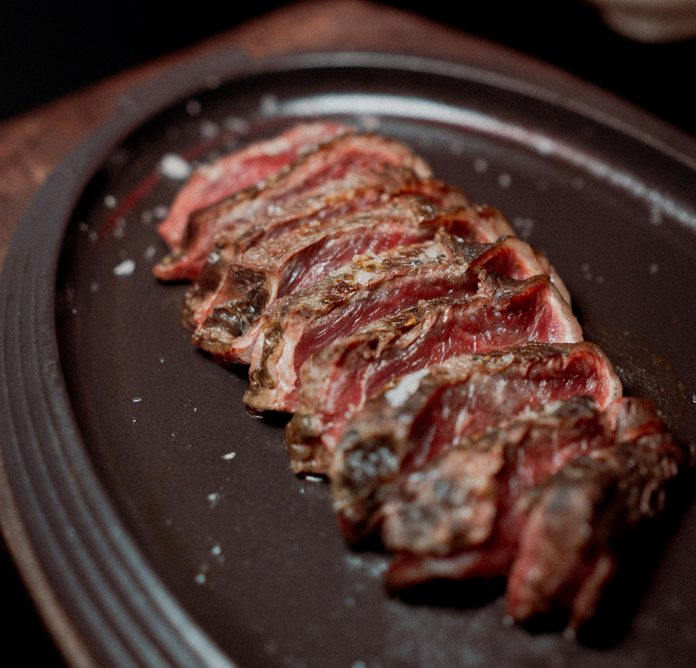
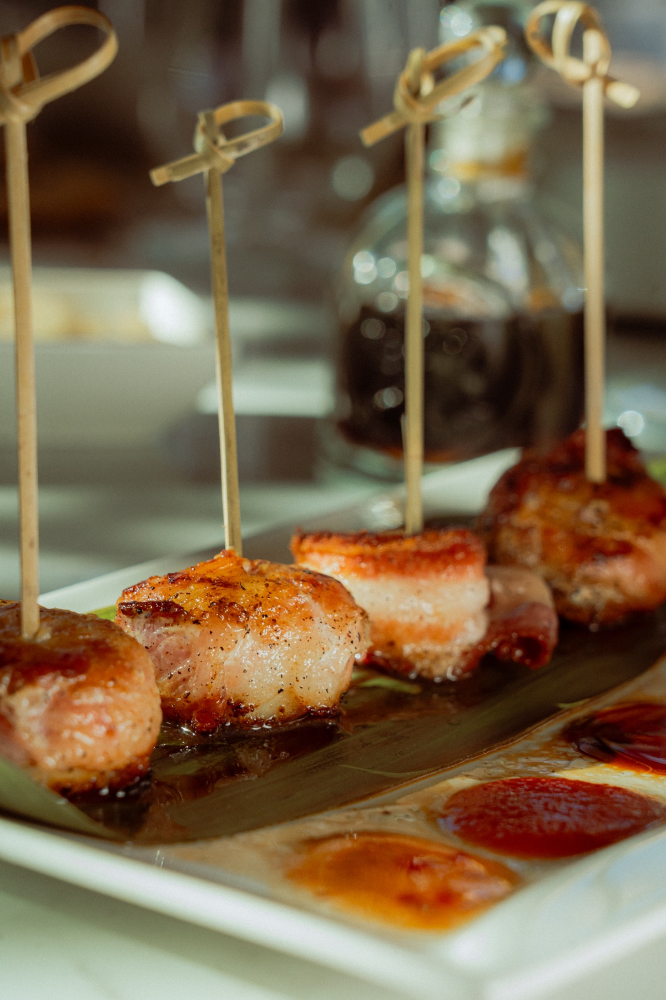
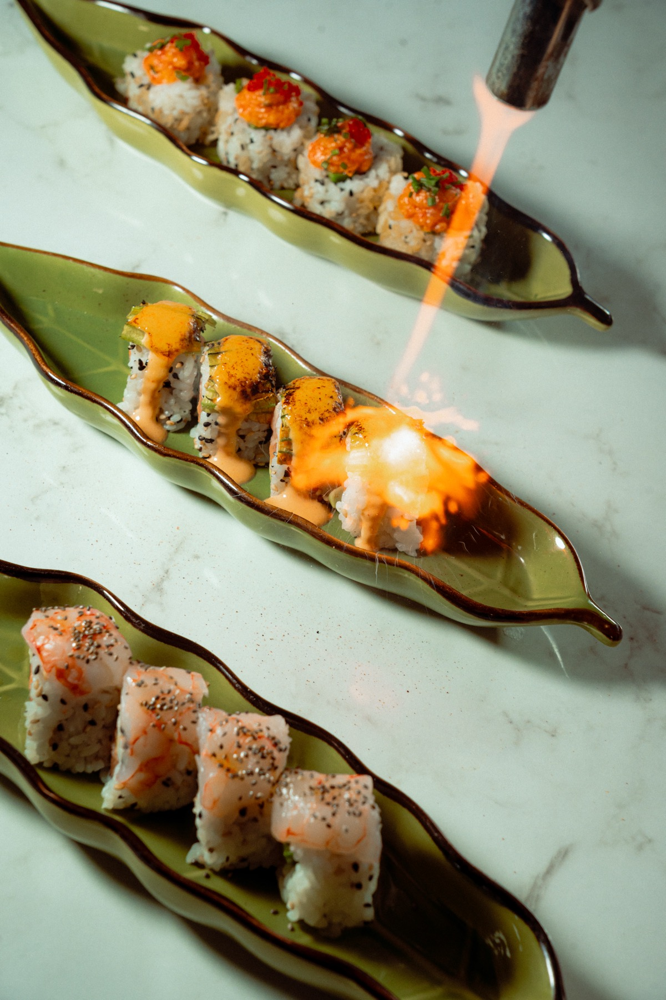

Photography · Food
Food photography as its own discipline — appetite, light and texture for restaurants, bars and food brands, not a catalogue of every dish on the menu.
The goal is always the dish, the interaction with it, and what it provokes — detail, colour, plating, appetite. It has to look desirable without becoming artificial. That mostly means artificial light, often somewhat hard, in a darker environment: flash is central, sometimes backlit into a silhouette, daylight only when it genuinely serves the shot.
Colour and light are pushed to make the food read as real, not staged — crispness, moisture, heat and freshness are the things worth chasing with directional light. Composition moves between the plate on its own and the plate in context: hands, staff, a guest's first reaction to what just arrived. The restaurant itself matters, but the emphasis usually lands on atmosphere, food and the people running the room together, not the architecture alone.
Every project starts with the chef — understanding what they want to communicate before building the visual treatment around it. Styling gets directed where it's useful (props, hands, angle, light), without over-staging past what the kitchen actually does. Video runs on the same principles as the photography, and usually goes further on atmosphere and social moments — how a place actually feels to sit in, not just how a plate looks.



A curated selection by client, not an archive of every service shot.






Two client relationships, told in full.
For restaurants, bars and food brands that want more than catalogue-style imagery.
Start a project